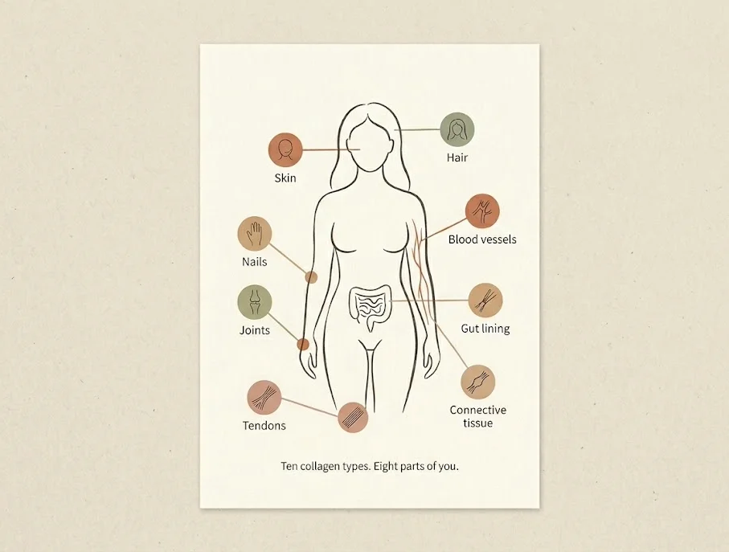
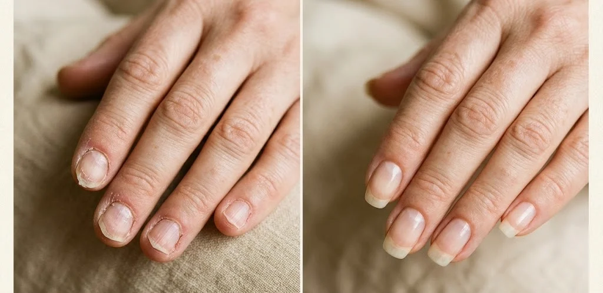
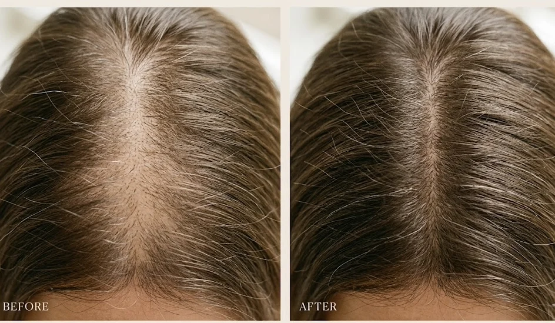
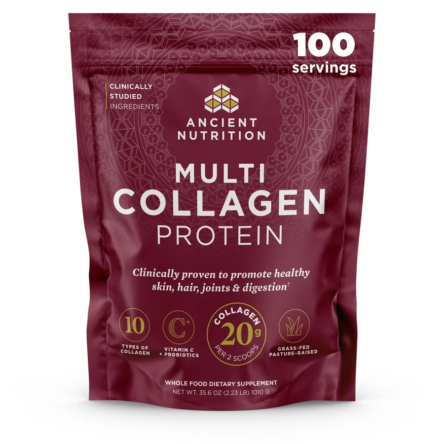

At 47, I'd Quietly Given Up On My Skin, Hair, Joints, Nails And Gut. Then My Oldest Friend Told Me The Fix Was Something I Throw In The Trash Almost Every Morning.
I'd spent two years and more money than I'll admit chasing half-results. One dinner changed all of it.
The shop-window moment almost nobody admits to
You know that thing where you catch your reflection in a shop window and stop, not because you like what you see, but because for half a second you don't recognize the woman looking back?
That happened to me outside a café last spring. And I stood there doing quiet math on how I'd gotten here.
Because it never arrives one problem at a time. It shows up all at once.
My knees complained on the stairs. My hair was thinner at the part, and too much of it kept turning up in the shower drain. My nails peeled before they could grow. My stomach was bloated by noon no matter what I ate. My skin just looked flat and tired in a way foundation couldn't fix.
And I was doing everything right. SPF, retinol, the good moisturizer, the water. I wasn't lazy and I wasn't careless.
So why did I feel like I was losing a fight I never agreed to enter?
A Reddit thread finally named it for me. Collagen. After 30 it drops about 1% a year, and it takes your skin, hair, joints, nails and gut down with it.
So I did what every woman does. I bought the popular collagen with the celebrity face on it. And I got a little better nails, maybe. The rest, nothing I could point to.
That was my headspace the night I had dinner with Renee.
Why "just be more consistent" was the worst advice I ever gave myself
Renee is one of my oldest friends. We go back to our twenties, and we hadn't sat down together in two years.
So I walked in braced to be the more tired one. Same age, same perimenopause window, I knew what to expect.
Except she looked different. Not "good lighting" different. Her skin had a lit-from-inside thing happening. Her hair was thick. She reached for the bread basket with no wince, no stiffness.
I try not to be a comparer. But it sat with me through the appetizers until I just asked. "Okay, what are you doing, because I'm dealing with all of it and you look incredible."
She laughed, because she'd had it worse than me.
Then she walked me through her own supplement graveyard, and I felt every word. Biotin that helped her nails and nothing else. A separate joint supplement. A fridge probiotic. Three different collagen brands over two years.
Every one gave the same thing. A little something somewhere, then nothing. Better nails but aching knees. More hydrated skin but hair still falling.
That's the part that breaks women like us. Not the symptoms. The not understanding why you're following every rule and still sliding backwards.
Here's what Renee figured out, and it stopped me cold. Her problem was never consistency. It was that nobody told her the truth about what she was actually buying.
The reason your collagen has been quietly doing half the job

Renee cannot leave a loose thread alone. Never could. If something doesn't add up, she loses sleep until it does.
So when collagen number three gave her the same half-result, she didn't reorder. She went down a rabbit hole, and what she pulled out of it is the thing I now tell every woman who'll sit still long enough to hear it.
Science has identified 28 different types of collagen. Twenty-eight. And your body doesn't use them interchangeably, like the same stuff in different packaging.
Each type has a job. Roughly 10 of them do the heavy lifting in the parts of you that visibly age: skin, joints, gut lining, hair follicles, the tendons and tissue junctions that hold everything in place.
Here's where I put my fork down.
Most collagen on the shelf gives you one or two types. Usually the same cheap ones. So you take your scoop every morning and feed maybe two of the ten tissues that need help, while the other eight keep quietly breaking down.
That's not a willpower problem. It's a coverage problem. And it has a name: Collagen Type Deficiency. The second she said it out loud, my whole two years made sense.
You were never inconsistent. You were handed an incomplete formula.
Picture your body as a house kept standing by ten repair crews. Most collagen hires one or two of them. So the house gets a fresh coat of paint out front, while the foundation, the pipes and the roof keep cracking behind the walls.
You were never inconsistent. You were handed an incomplete formula. Those are very different things, and not one brand had ever bothered to explain the difference.
What collagen loss is quietly charging you every single day
Before Renee even told me how to fix it, she told me what it was costing me to leave it broken. And that's the part I still can't unhear.
We talk about collagen loss like it's a vanity issue. Something for the mirror. That's not what's happening to you.
It's the stiffness when you stand. The workout recovery that used to take a day and now takes three. The gut that "turned on you" out of nowhere. The hair in the drain. One structural thing draining out of all of you at the same time.
And the cruel part, the longer it runs, the harder it is to rebuild. Every month you feed one or two tissues while the rest break down is a month you don't get back.
I'm not telling you this to scare you. I'm telling you because I spent two years sure I had time. I didn't. It just happened quietly enough that I let it.
So by the time Renee told me what it really takes to cover all ten types, I wasn't skeptical anymore. I was ready.
The four ingredients that cover all ten, including the one hiding in your trash can
The answer was cleaner than I expected. You don't need ten pills. You need four real food sources, each bringing different types, and together they cover the whole set.
The first is hydrolyzed bovine collagen: Types I and III, the backbone of skin, tendons and the gut wall. "Hydrolyzed" just means it's pre-broken so your body can absorb it instead of passing it through.
Next comes chicken bone broth, which brings Type II, the collagen in the cushioning cartilage of your joints. It's why Renee's knees had stopped sounding like Rice Krispies.
The third source is marine collagen from fish. Smaller molecule, slightly different makeup, and it reaches layers of skin that bovine alone can't. Not a duplicate, a different delivery to a different address.
Then the fourth, the one Renee saved for last because she knew my reaction. Fermented eggshell membrane.
The thin film on the inside of an eggshell. The part you scrape off and throw away without thinking. It's the only common food source that carries all ten types, including the rare ones that govern your hair shaft, your blood vessels, your tissue junctions and the anchor that keeps skin from sagging.
That scrap I'd been binning every morning making my eggs was the exact missing piece I'd been buying three products to replace.
Three things make those sources work instead of getting flushed away.
A soil-based probiotic that survives stomach acid, so the collagen gets absorbed. A big dose of Vitamin C, the cofactor your body needs to make its own collagen, so you're switching the factory back on, not just topping up the tank. Plus naturally occurring glucosamine, chondroitin and hyaluronic acid, the joint and hydration stuff people buy separately, riding along in that eggshell membrane for free.
Here's why the combination is the whole point. One or two types fixes one or two tissues. Only the full set, absorbed and switched on, rebuilds across all ten at once.
The two men behind it, and the detail that made my skeptical friend trust it
I'll be straight with you. When Renee first found the actual product, she almost didn't buy it. It checked every box so neatly her scam radar went off.
Then she looked up who made it, and that flipped her.
It was started by two men. One is a doctor with a clinical nutrition background who's spent more than twenty years on this. The other, and this is the part that got me…, nearly died in his early twenties from a brutal digestive illness doctors couldn't control. He clawed his way back through food and nutrition, and that fight became his life's work.
So this wasn't a marketing company renting a doctor's face for the label. It was built by two people who came at gut health and real nutrition like their lives depended on it, because for one of them it had.
And the eggshell membrane isn't running on borrowed claims. That ingredient has its own human clinical research behind it, not generic "collagen is good for you" studies. In testing, joint-discomfort results have shown up fast, with some stiffness easing inside the first week.
It's also third-party lab tested and made in the USA, which matters more than you'd think in a category that quietly carries things you do not want in your body. I'll come back to that.
Remember the thing I said I'd circle back to? Here it is.
So here's what I meant about what other products quietly carry, and it's the part that sealed it for me.
This one gets third-party lab tested, including for the heavy metals you can't see, taste or smell. That alone put my mind at ease before I'd taken a scoop.
Then I read the rest of the label, and it was almost funny how long the "no" list ran. No gluten, no grains, no dairy, no soy, no nuts, no added sugar, no added hormones, no antibiotics. It's keto and paleo friendly, and the collagen comes from grass-fed, pasture-raised, cage-free sources.
For a woman who's spent years squinting at ingredient panels trying to decode what's in the tub, the sheer length of what this leaves out was its own kind of relief.
Everything one scoop is feeding before your coffee's even cold
Once I stopped worrying about what was in it, I got a little obsessed with what it was doing.
When Renee first explained the ten types, it stayed abstract. Numbers. Then she put it plainly, and it landed.
That one scoop, all ten types together, is feeding eight different parts of you at the same time.
Your skin, your hair, your nails. The cartilage in your joints, your tendons, your gut lining, your blood vessels, and the connective tissue holding the whole structure where it belongs.
Eight. At once. While I sip a coffee I was going to drink anyway.
There's even a bonus I didn't ask for. A full serving brings around 20 grams of protein, the glycine-heavy kind, which is its own quiet win for a woman my age who's supposed to be eating more protein and usually isn't.
What actually happened after I started, week by week
I had two hesitations before I ordered. The price felt like a lot, and I'd heard unflavored collagen can taste like leather in your coffee.
Both got handled before I could use them as an excuse. There's a 30-day money-back guarantee where you can ask for your money back and still keep the rest of the bag, so I was risking nothing. The unflavored disappears into my coffee with zero taste, and there's a flavored version and even gummies if powder isn't your thing.
So here's how it went.

The first stretch was my gut and my joints. Within a couple of weeks the noon bloating eased off, and my knees stopped announcing themselves on the stairs.
Around weeks four to six, my nails. They stopped peeling, got hard again, and grew. If you've lived with splitting nails, you know that is not small.

Then the hair. Less in the drain, and little new baby hairs at my part where there'd only been thinning. Past the eight-week mark, the thing I'd stopped believing would come back, my skin looking lit up again, firmer along the jaw, softer at the corners of my eyes.
The moment I knew it was real wasn't even mine. My husband looked over one evening, puzzled, and asked if I'd changed my skincare. I hadn't touched a thing on my face.
One scoop, every morning, in a coffee I was already drinking. And underneath it, the relief of knowing my whole body was finally getting fed instead of one piece while the rest declined. That feeling is worth more than the bag costs.
100-serving bag · ~3-month supply · 30-day money-back guarantee
Add up what you're already spending to get half the job done
Let's talk money, because this is where it stopped feeling like a splurge.
Look at what Renee was buying before. A collagen. A separate joint supplement. A probiotic. A biotin. Maybe a hyaluronic acid on top. Four or five products, twenty to forty dollars each, every month, forever, and still only covering pieces.
Add that up over a year and you're well past several hundred dollars to keep half the job half-done.
This is the 100-serving bag, about a three-month supply. It works out to roughly the price of a daily coffee, and it folds the joint stuff, the gut stuff, the hyaluronic acid and the Vitamin C into one scoop. The glucosamine, chondroitin and HA you were buying separately are just in there.
Their subscribe-and-save takes 35% off your first order and 15% off every one after, free shipping, cancel anytime.
So the real question isn't whether you can justify it. It's whether it makes sense to keep paying more for a stack that each handles one tissue, when one scoop covers all ten. Once you've done that math, hesitating is the expensive choice.
Why it keeps selling out, and it's not a marketing trick
Quick heads up, and this one's real, not a fake ticking clock.
That fermented eggshell membrane, the rare ingredient that makes the whole thing work, is genuinely expensive and hard to source in a fermented form. It's exactly why most brands skip it or use a trace amount.
So it gets made in batches, not unlimited runs. The 100-serving size in particular has a habit of selling out, because it's the best value and it moves fast.
If it's in stock when you're reading this, that's your window. When this size sells out, a restock isn't always quick.
You're not risking a single dollar, and here's why
This is what finally got me to stop overthinking and just try it.
You're covered by a 30-day money-back guarantee. If it's not doing its job, you ask for your money back. And you can keep the rest of the bag while you do it.
Sit with that. The earliest wins, the gut settling and the fast joint relief, tend to show up well inside that window. So you're not gambling on a promise months out. You'll have your own first signals before the guarantee is even up.
A company that lets you keep the product and take the refund isn't worried you'll want one. The only thing actually at risk here is staying exactly where you are.
What the next 90 days actually look like
The first two weeks are mostly underground, about your gut and joints. The probiotic clears the path, the Vitamin C switches your own collagen production back on, and that fast joint relief starts. Less bloating, easier stairs.
Weeks three to six is when it gets visible, usually starting with your nails. They stop peeling, harden, and start growing. Nails are the early progress report telling you it's working.
Weeks six to eight bring the hair and the start of the skin change. Less shedding, new growth at the thin spots, skin beginning to firm and brighten as the deeper rebuilding catches up.
By around day 90, you're in the part that makes people loyal for life. This is where it compounds. You're feeding all ten tissues while your body makes more of its own, and the wins stack instead of plateauing. That's the version of you a coworker asks about.
Two versions of you, one year from now
Picture the next twelve months going the way the last few did. Another collagen that does a little something. Another separate supplement for the part it missed. Stairs still announcing your knees, drain still collecting your hair, more money and more half-results while you tell yourself you'll sort it out eventually.
Now picture the other version. Nails she can grow. Hair filling back in. Skin that makes her stop at the shop window for the good reason this time. Knees that just work.
Both of those women wake up tomorrow. The only thing deciding which one you become is whether tomorrow's coffee has a scoop in it. That's not a someday decision. It's a daily one, and you're making it either way.
How to get yours

The 100-serving bag is already a fraction of what that separate stack costs you over a year, and it does the job all of them couldn't do together.
Choose subscribe-and-save for 35% off your first order and 15% off every delivery after, with free shipping and free cancellation anytime. They set it up that way because keeping you happy long-term is worth more to them than one sale, and that only works if it delivers.
Grab the 100-serving bag while it's in stock, scoop it into the coffee you're already making tomorrow, and let your own nails be the first thing that tells you it was the right call.
guarantee
P.S. If you read this far, you already know which of those two women you are. You wouldn't have made it here if part of you weren't tired of the half-results. So one honest question: if you keep doing the exact same thing you've done for two years, why would the next two go any differently? The bag is sitting there, the guarantee means you keep it even if you change your mind, and the only real risk left is the one you're already living with.
The Midlife Wellness Report · Beauty & Healthy Aging. This is an advertisement and not an actual news article, blog, or consumer protection update. The story depicted here is for illustration purposes only. These statements have not been evaluated by the Food and Drug Administration. This product is not intended to diagnose, treat, cure, or prevent any disease.
What verified buyers say